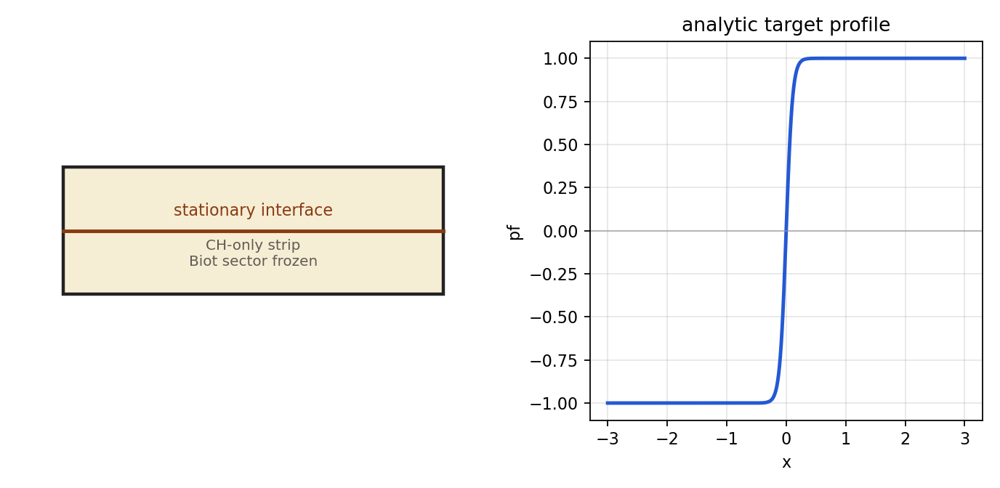
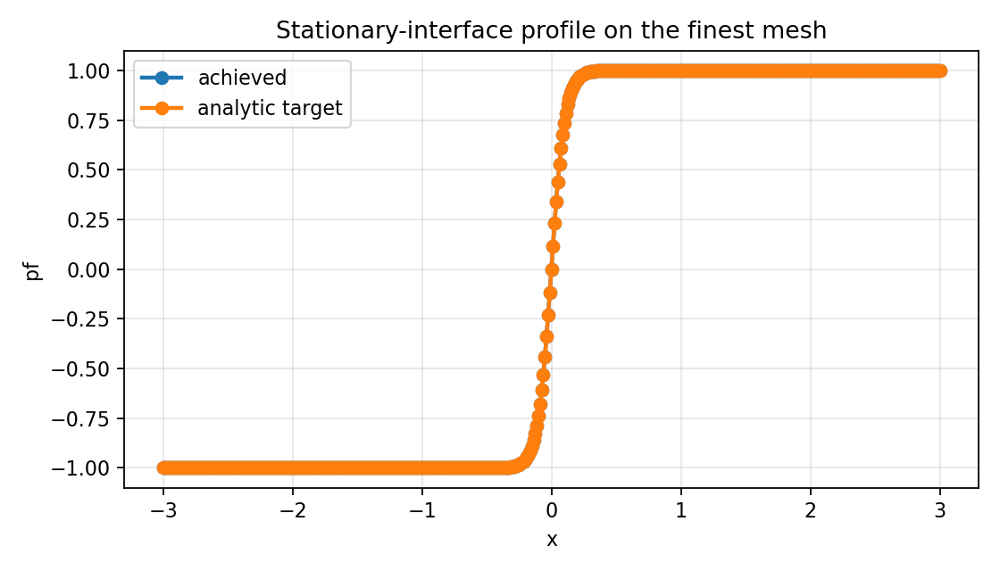
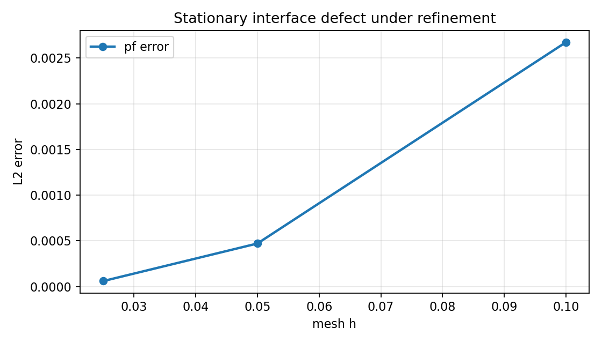
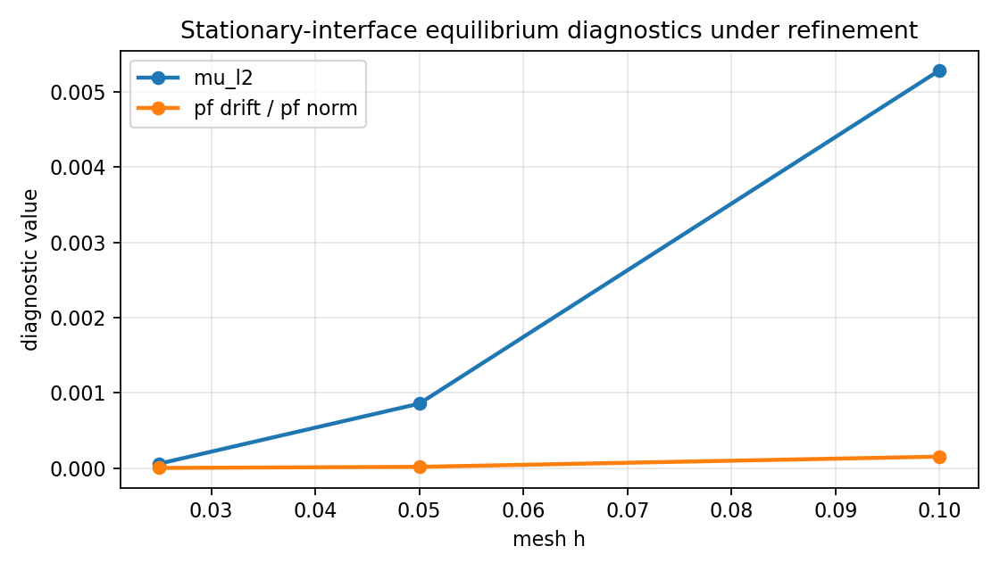
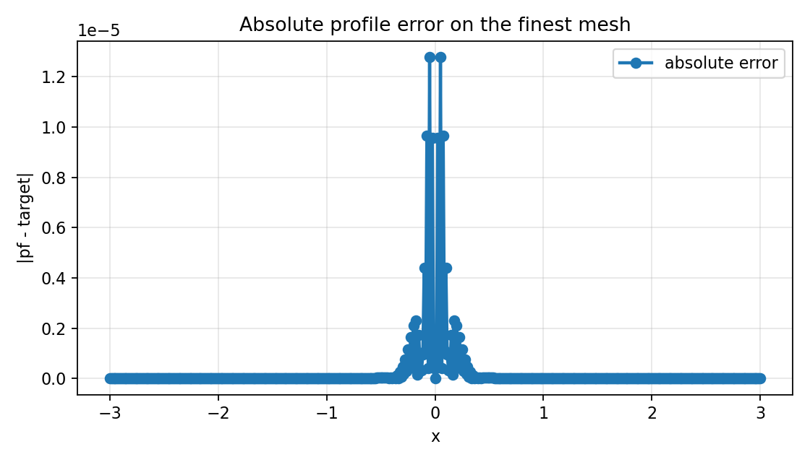

Benchmark
Stationary Interface
Family: analytic-benchmarks
Stationary diffuse-interface defect against the analytic tanh target.
Target and Success Criteria
target_kind: Analytic
Tier: full
Unknowns active: pf, mu
Frozen terms: mechanics, pressure, theta, geometry family
Comparison grammar: Achieved / Target
Tickets: vv-004
What This Benchmark Verifies
This benchmark measures how the diffuse stationary interface tracks the analytic tanh profile under refinement.
Benchmark Narrative
Narrative
Physical Problem
A classical CH-only diffuse interface on a rectangular strip is initialized from the closed-form tanh profile and advanced one CH-only step while mechanics, pressure, and storage remain inactive.
Narrative
Target Definition
The target is the closed-form stationary interface with zero chemical-potential defect. The achieved profile should remain nearly unchanged after one step, and the refinement diagnostics should improve as h decreases.
Narrative
Why These Observables
The setup schematic shows the strip problem, the finest-profile overlay is a raw example of the simulated state after one CH step, the profile-error curve shows what is extracted pointwise from that run, and the refinement/drift plots summarize comparison against the analytic stationary target.
Narrative
How To Read The Error
Monotone improvement and a positive last refinement slope indicate the CH discretization is converging toward the analytic interface. Stalled profile error with small mu/drift points to resolution limits rather than broken physics wiring.
Narrative
Reference Qualification
The target profile and equilibrium conditions come directly from the stationary-interface harness and its associated VV test, which enforce monotone defect reduction.
Narrative
Limitations
This page isolates the CH sector on an auxiliary strip and does not exercise the coupled mechanics or hydraulic pieces.
finest_pf_error_l2
L2
pass
last_refinement_slope
pass
Setup Schematic
figure

Setup schematic for the stationary-interface strip and its analytic tanh target profile.
plots/setup-schematic.png
Raw Run Evidence
Extracted Observables
plot

Raw finest-mesh profile overlay showing the achieved interface against the analytic target after one step.
plots/finest-profile-overlay.png
Target Comparison
plot

Phase-field defect against the analytic target across refinement levels.
plots/pf-error-vs-h.png
Error Summary
plot

Chemical-potential defect and normalized phase-field drift across refinement levels.
plots/mu-and-drift-vs-h.png
plot

Pointwise absolute profile error on the finest-mesh stationary-interface sample line.
plots/finest-profile-error.png
Scalar Summary
| Label | Value | Unit | Comparison | Threshold | Severity |
|---|---|---|---|---|---|
| finest_pf_error_l2 | 6.00578e-05 | L2 | 0 | 0 | pass |
| last_refinement_slope | 2.97177 | monotone improvement | > 0 | pass |
Evidence Table
| Label | Metric | Comparison | Threshold | Severity |
|---|---|---|---|---|
| last_refinement_slope | last_refinement_slope | 2.97177 | > 0 | pass |
Series Overview
| Plot | Group | Observable | Case | Level | Target |
|---|---|---|---|---|---|
| pf_error_0 | analytic_target | Phase-field defect | mesh | 0.1 | analytic target |
| pf_error_1 | analytic_target | Phase-field defect | mesh | 0.05 | analytic target |
| pf_error_2 | analytic_target | Phase-field defect | mesh | 0.025 | analytic target |
Cases
Case
mesh_family
Uniform h-refinement against the closed-form interface profile.